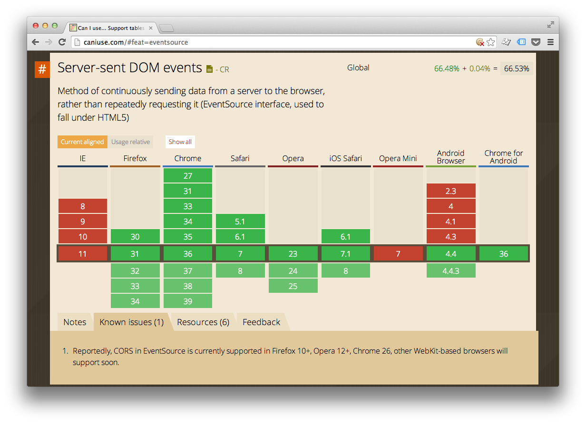

HTML5 Server-Sent Events and Perl
Fumiaki Yoshimatsu
Fumiaki Yoshimatsu
Senior software engineer at Peatix Inc (http://peatix.com).
Perl, JavaScript, Objective-C and Java.
nginx, Catalyst-backed web application, memcached, Kyoto-Tycoon, MySQL, mongodb...
...enable servers to push data to Web pages over HTTP or using dedicated server-push protocols...
No, you don't need no websockets for server side push.
source = new EventSource('http://example.com/sse');
source.onmessage = function (event) {
console.log(event.data);
};
my $req = Plack::Request->new($env);
return sub {
my $responder = shift;
my $cv = AnyEvent->condvar;
my $writer = $responder->(
[ 200,
[
'Content-Type', 'text/event-stream',
]
]
);
my $hse = HTTP::ServerEvent->as_string(
data => 'Hello SSE!'
);
$writer->write($hse);
};

https://github.com/Yaffle/EventSource